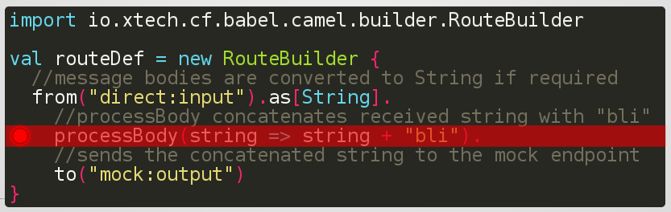

io.xtech.babel
The efficient way to write integration solution
Available DSL
- Babel Camel Scala
- Babel Camel Java (experimental)
- Babel Spring Integration Scala (experimental)
Babel Camel route example
import io.xtech.babel.camel.builder.RouteBuilder val routeDef = new RouteBuilder { //sends what is received in the direct // endpoint to the mock endpoint from("direct:input").to("mock:output") }
Babel is much more than that
- Typed: validates your route through statically typing
- Functional: defines your route in an elegant way
- Modular let you decide what you want to use
Babel is typed and functional
import io.xtech.babel.camel.builder.RouteBuilder
val routeDef = new RouteBuilder {
//message bodies are converted to String if required
from("direct:input").as[String].
//processBody concatenates received string with "bli"
processBody(string => string + "bli").
//sends the concatenated string to the mock endpoint
to("mock:output")
}
Babel is composable
import io.xtech.babel.camel.mock._
//The Mock extension is added simply by
// extending the RouteBuilder with
val routeDef = new RouteBuilder with Mock {
//the mock keyword is the same as typing
// to("mock:output")
from("direct:input").mock("output")
}
Babel is debuggable
